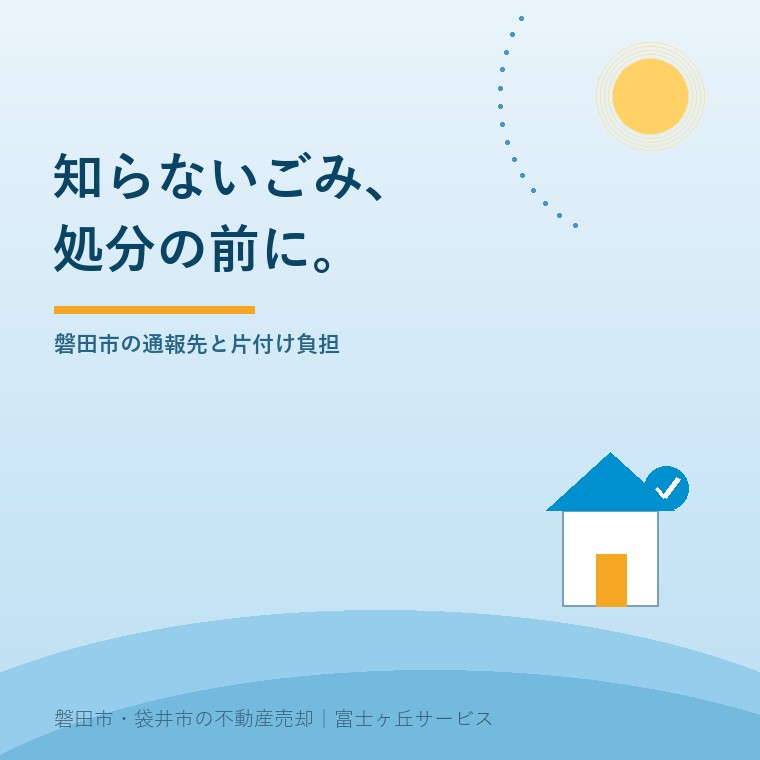
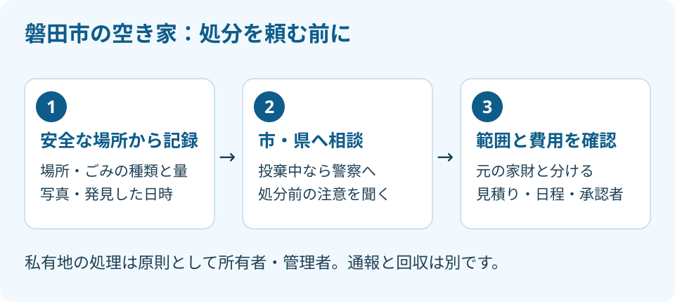

磐田市の空き家に不法投棄、処分前の3手順
2026年9月29日｜カテゴリ：空き家・施設入居

この記事の要点
親の空き家に知らないごみ。片付け業者を呼んでいい？
磐田市の空き家で不法投棄を見つけたら、安全な場所から記録し、市の環境課へ相談してから処分方法を決めます。現に投棄中なら警察へ通報します。私有地では原則として所有者・管理者に処理の負担が残ります。磐田市・袋井市・森町では、介護施設の運営から不動産事業を始めた富士ヶ丘サービスのような会社に、管理と売却を一緒に相談する選択肢もあります。
大石浩之（磐田市／不動産業）です。施設に入った親の家へ行くと、庭に見覚えのない袋がある。売却の相談より先に片付けたくなる場面ですが、私はまず記録と相談を勧めます。ごみを消すことと、起きたことを整理することは別だからです。
2026年9月29日に、磐田市・静岡県・環境省の案内を確認しました。環境省は2002年から毎年10月を「3R推進月間」としています。ただし同ページの個別キャンペーンは2025年の案内です。2026年の募集情報とは扱わず、10月を前に実家の管理を見直すきっかけにします。
磐田市への相談と警察への通報を分ける
磐田市で空き家の敷地にごみを見つけた場合、市環境課生活環境グループが相談・通報先です。投棄が現に行われている場合は、静岡県の案内に従い最寄りの警察署へ通報します。片付け業者に頼む前に、発見した場所と状況を伝えます。
| 相談する内容 | 公式案内に載る窓口 |
|---|---|
| 磐田市内で発見したごみ | 市環境課生活環境グループ 0538-37-2702 |
| 県への不法投棄の情報提供 | 静岡県・不法投棄110番 054-221-3810 |
| 産業廃棄物の場合 | 西部保健所環境課・廃棄物班 0538-37-2248（市の案内） |
家庭のごみか産業廃棄物かを、見た目だけで家族が確定する必要はありません。分かる種類と量を伝え、窓口に相談します。県の「不法投棄110番」は名称であり、掲載された電話番号は上の番号です。緊急時の警察の110番と混同しないでください。
私は、市と県が通報先を示している点を評価します。何をどこに伝えるかが分かれば、遠方の家族でも最初の連絡に進めます。県が挙げる通報項目も、現地へ行く人に渡す確認メモとして使えます。
一方で、通報したら片付けまで終わる、と受け取らない説明が要ると私は考えます。相談の受付と、私有地からの搬出は別の仕事です。電話の最後に「処分前に残すものはありますか」「処理方法はどこへ相談しますか」と聞くところまでを、最初の一件にしたいのです。
処分前の記録は場所・量・発見日から
静岡県は通報内容として、場所の住所や目印、土地の特徴、ごみの種類と量、行為者や車両の情報を挙げています。分からない項目は不明のまま伝えます。誰が捨てたかという推測と、現地で見た事実を混ぜません。
私の提案は、安全な距離から全体の写真と場所が分かる写真を撮ることです。袋を開けて中身を調べたり、車を追いかけたりする必要はありません。液漏れや鋭い物が見える場合は触らず、その状態を相談先へ伝えます。記録のために危険へ近づかないことを優先します。
メモには、発見日時と前回見回った日を分けて書きます。9月29日に発見しても、捨てられた日が9月29日とは限りません。前回の写真があれば比較用に残します。「以前はなかった」と言うとき、どの時点まで確認できているかが相手に伝わります。
敷地の端にある場合は、実家の土地か道路側かも断定せずに伝えます。塀の位置だけで土地の境界を決めつけず、住所、目印、配置が分かる写真を用意します。境界の個別判断が必要なら、土地家屋調査士などの専門家に確認を。

私有地の処理負担を見積書で分ける
磐田市は、私有地に不法投棄されたごみは、原則として土地の所有者または管理者が処理すると案内しています。自分で出したごみではなくても、片付けの手配が持ち主側に残る。この点は、売却の手取りを考える前に知っておきたい事実です。
捨てた人が悪い、だけでは家族の片付けは終わらない。私はそう考えます。納得できない気持ちと、誰が連絡し、何を見積りに出すかは分けて進める必要があります。処分費だけでなく、立会いの日程や鍵の受渡しまで決めて初めて、家族の負担が見えてきます。
私は、写真だけで「全部でいくら」と言い切るのをためらいます。量が同じに見えても、種類や搬出経路が未確認なら条件が違います。処理費の相場をここで作るより、見積書に含む作業をそろえて比較する方が、売主に責任を持てる説明です。
| 見積りで分けたい欄 | 家族が確かめる内容 |
|---|---|
| 対象物 | 新たに見つけたごみと、元からある家財を区別 |
| 作業範囲 | 分別、積込み、運搬、処分、清掃のどこまでか |
| 追加条件 | 現地で量や種類が違った場合の連絡と承認 |
| 実施日 | 立会う人、鍵を渡す人、完了写真の送り先 |
窓口には、ごみの種類に応じた適正な処理先の確認方法も聞きます。業者の「何でも持っていく」という言葉だけで決めず、処理できる対象と見積りの内訳を確かめます。家の中の片付けも同時に頼むなら、実家の遺品整理と処分前の確認を別の段取りとして読み、残す書類まで一緒に運び出さないようにします。
磐田の実家は片付け後の管理まで決める
磐田市は、不法投棄を防ぐ方法として草刈り、フェンスやロープなどの囲い、看板の設置を挙げています。ポイ捨て禁止看板は環境課や支所市民生活課で貸し出すと案内しています。貸出方法や在庫は、取りに行く前に窓口で確認してください。
福田・竜洋・豊田・豊岡の支所も同じ市のページに掲載されています。遠方の子が電話をし、現地の家族が看板を受け取るなら、誰がどこへ行くかを先に共有します。袋井市の家については、磐田市の窓口をそのまま使わず、所在地の市へ確認します。
私は、看板を立てた日で管理を終えない方がよいと考えます。次に見回る日と写真を送る相手まで決めてください。外から入りやすい場所を確認しても、囲いを設ける範囲が隣地にはみ出せば別の問題になります。設置場所と出入りの経路も家族で確かめます。
管理を外部へ頼むなら、発見時の連絡は管理料に含まれるか、撤去は別見積りかを聞きます。空き家管理サービスの契約前5項目と合わせ、巡回の回数だけで選ばないことです。報告する仕事と処分を発注する権限を分ければ、想定外の費用を避けやすくなります。
売却を決める前に家族で残す1枚
空き家の売却準備では、不法投棄の発見記録、相談先、処分見積り、完了確認を一続きで残します。仲介会社に伝えるのは「きれいになりました」だけでなく、何を確認し、何がまだ残っているかです。
売出し中なら、内覧日と処分予定日の前後関係も共有します。片付け前の写真が販売資料に残るなら更新を依頼し、完了後の現況を確認してもらいます。ごみが敷地から消えたことと、地面や設備の状態が確認できたことを同じ扱いにはしません。
買主に引き渡す範囲は、残置物と現況での引渡しも参考にして相談してください。不法投棄があったというだけで価格を一律に下げる話にはしません。処理が終わったか、別の調査が必要かを分け、説明すべき内容は担当宅建士と確認します。
富士ヶ丘サービスは、介護と不動産を一体で相談できる窓口です。磐田・袋井で家族が困らない売却を考えるとき、施設の予定と実家の管理を別々に放り出さず整理します。私は、売却を決める前でも次の3点を一枚に残すよう案内します。
- 発見日時・場所・写真と、分かる範囲のごみの種類。
- 相談した窓口・日付・処分前に確認すること。
- 見積りを取る人、作業を承認する人、次の巡回日。
よくある質問
個別の状況を確認してから、次の手続きを決めてください。
- 私有地のごみも、市に通報すれば無料で回収されますか？
- 磐田市は、私有地に不法投棄されたごみは原則として土地の所有者または管理者が処理すると案内しています。通報の受付と無料回収は同じではありません。発見場所と種類を伝え、処分方法を先に確認してください。費用負担や投棄者への請求について個別の争いがある場合は、資料をそろえて弁護士などの専門家に確認を。
- 投棄した人や車の番号が分からなくても相談できますか？
- 静岡県は、投棄場所、土地の特徴、ごみの種類と量、行為者や車両の情報を通報項目に挙げています。分からないことを推測で埋めず、分かる範囲を伝えてください。発見日時と写真を添えるのは筆者の提案です。相手を追跡したり、撮影のために近づいたりせず、投棄中の現場なら警察への通報を優先します。
- 売却予定なら、内覧までに全部処分するべきですか？
- まず通報・相談と記録を済ませ、処分範囲と見積りを仲介会社と共有します。買主に何を引き渡すかが未定のまま、家の中の物と一緒に処分契約を結ぶのは避けたいところです。危険な物への対応は別途急ぎ、通常の片付けは費用と日程を整理して判断します。処分を先行するかは物件の状況ごとに相談してください。

この記事を書いた人：大石浩之（磐田市／不動産業・宅地建物取引士）
富士ヶ丘サービス株式会社。介護施設の運営から不動産事業を始め、磐田市・袋井市・森町で、介護と相続、実家の売却を一体で相談できる窓口を設けています。家族が困らない売却のため、資料と現地の条件を一件ずつ整理します。著者プロフィール
本記事は2026年9月29日時点の公開情報と筆者の意見です。制度・数値・手続きは変更されることがあります。重要事項説明・税務・登記・相続などの個別判断は、担当宅建士・税理士・司法書士・弁護士などの専門家に確認を。